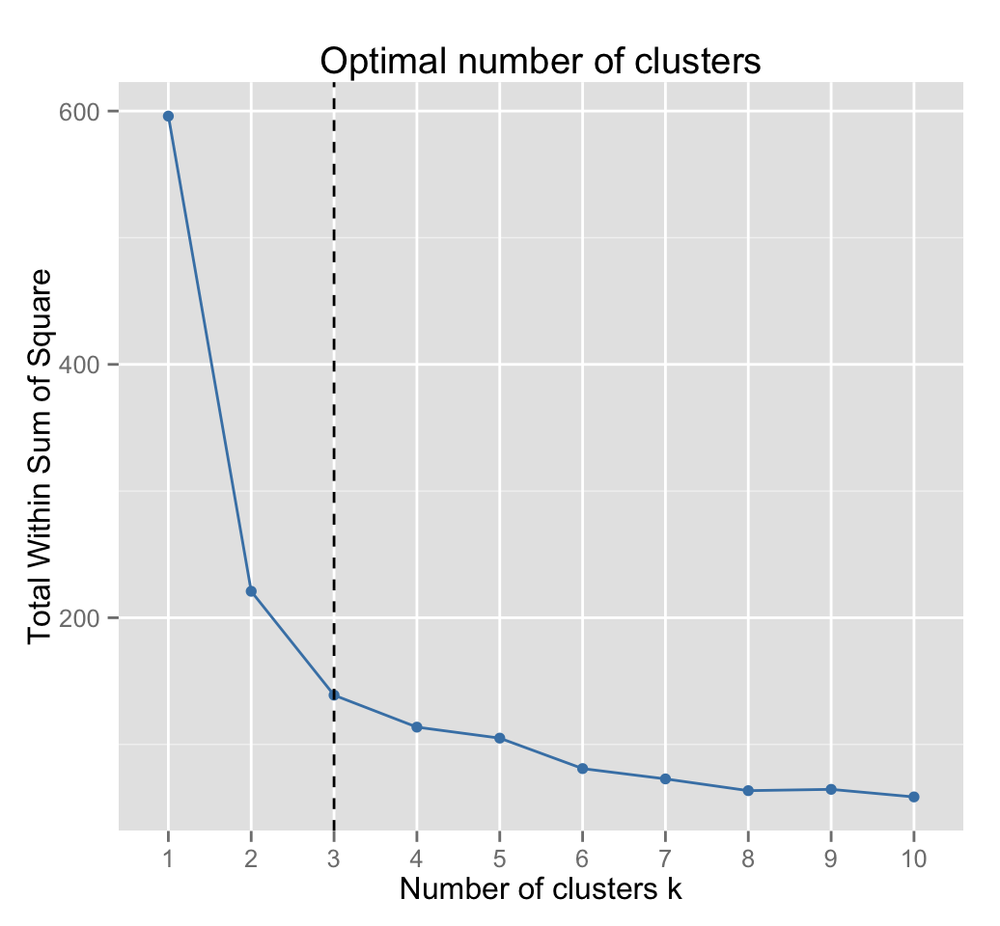

Weaknesses and Fixes of K-means
K-means can be viewed as a greedy algorithm for partitioning the n samples into k clusters so as to minimize the sum of the squared distances to the cluster centers. Although it is a very efficient algorithm, it does have some weaknesses:
- The way to initialize the means was not specified. One popular way to start is to randomly choose K of the samples, but it can also go wrong.
- The results produced depend on the initial values for the means. The standard solution is to try a number of different starting points.
- Even for a set of parameters, the K-means algorithm might produce different clusters for each initial set of centroids. This issue is called instability.
- It can happen that the set of samples closest to centroid is empty, so that centroid cannot be updated. This is an annoyance that must be handled in an implementation, but that we shall ignore.
- The results depend on the metric used to measure the distance. A popular solution is to normalize each variable by its standard deviation, though this is not always desirable.
- The results depend on the value of K. The fix below solves this issue, but is extremely costly to run.
The sensitivity to the number of clusters, K, is an especially famous and problematic concern. There is however, an extremely useful mathematical trick that makes K-means usable. This trick simultaneously solves the sensitivity to K, as well as the sensitivity to initial means. In general, the ideal value of K tends to produce the most stable solutions for a dataset. Specifically, if you run K-means many times, and log the clusters that result from every run, you’ll find that some values of K tend to produce the same clusters despite varying initial conditions. Given this fact, we can choose K to be the number of clusters that produces the most stable results across many trials.
